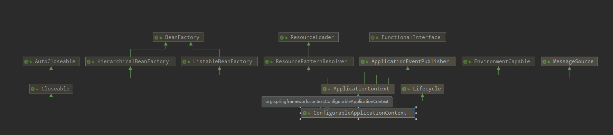

原文出处:本文由博客园博主let_me_tell_you提供。
原文连接:https://www.cnblogs.com/ttlx/p/11474911.html
原文连接:https://www.cnblogs.com/ttlx/p/11474911.html
UML图

接口的作用
从上面的UML图中，可以看到 ConfigurableApplicationContext 直接继承了 ApplicationContext, Lifecycle, Closeable 接口，所以 ApplicationContext 是 ApplicationContext 的子类。用过Spring或者看过Spring源码的，肯定都知道ApplicationContext这个接口。它的作用和名字一样，就是应用程序上下文（说明起一个好名字是多么重要），包含了程序上下文唯一ID，应用程序名称等信息。
Lifecycle 接口则是负责对 context 的生命周期进行管理，提供了 start() 和 stop() 以及 isRunning() 方法。
Closeable 接口是JDK提供的接口，用于关闭组件，释放资源。
所以 ConfigurableApplicationContext 接口的作用就是设置上下文 ID，设置父应用上下文，添加监听器，刷新容器，关闭，判断是否活跃等方法。其实简单看一下 ApplicationContext 接口就会发现里面之后get方法，没有set方法，所以子接口就提供了set方法。